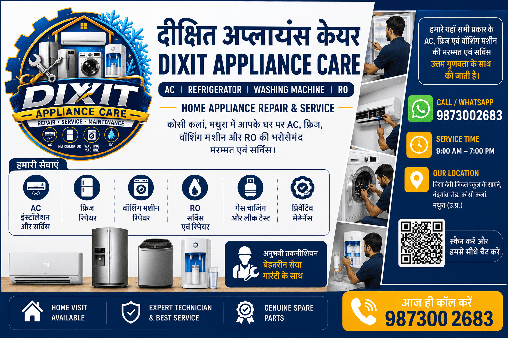

AC Repair & Service
AC repair, servicing और maintenance के लिए सहायता।
- AC Service
- AC Repair
- AC Maintenance
DIXIT APPLIANCE CARE
HOME APPLIANCE REPAIR & SERVICE
कोसी कलां, मथुरा में आपके घर पर AC, फ्रिज, वॉशिंग मशीन और RO की भरोसेमंद मरम्मत एवं सर्विस।

दीक्षित अप्लायंस केयर में AC, Refrigerator, Washing Machine और RO की मरम्मत एवं सर्विस की सुविधा उपलब्ध है। हमारा उद्देश्य ग्राहकों को भरोसेमंद, सुविधाजनक और बेहतर सर्विस प्रदान करना है।
कोसी कलां, मथुरा में घर पर सेवा, अनुभवी तकनीशियन और ग्राहक संतुष्टि पर हमारा फोकस है। AC service, fridge repair, washing machine service या RO repair की आवश्यकता होने पर हमें कॉल या WhatsApp करें।

घर पर सुविधा के साथ प्रमुख घरेलू appliances की repair और service.
AC repair, servicing और maintenance के लिए सहायता।
Refrigerator repair, servicing और maintenance के लिए सहायता।
Washing machine repair और servicing के लिए सहायता।
RO / water purifier repair, servicing और maintenance के लिए सहायता।
सामान्य repair और service के लिए अनुमानित दरें। अंतिम कीमत समस्या, parts और कार्य की जटिलता के अनुसार तय की जाएगी।
| Appliance | Service | Indicative Price | Important Notes |
|---|---|---|---|
| Visit & Diagnosis | AC / Fridge / Washing Machine | ₹249 – ₹399 | May be adjusted or waived when a qualifying repair is approved. Please confirm before visit. |
| AC | Split / Window General Service & Cleaning | ₹499 – ₹799 | Deep cleaning or difficult access may cost more. |
| AC | AC Installation | ₹999 – ₹1,499 | Standard installation. Materials and extra pipe work separate. |
| AC | AC Uninstallation | ₹499 – ₹799 | Extra work or difficult access quoted separately. |
| AC | AC Shifting / Reinstall | ₹1,499 – ₹2,499 | Depends on distance, installation materials and pipe work. |
| AC | Gas Leak Diagnosis / Repair | ₹499 – ₹1,500+ | Leak repair and materials depend on fault location. |
| AC | Split AC Gas Refill / Complete Charge | ₹1,800 – ₹3,000+ | Depends on refrigerant type, leak work and system condition. |
| Refrigerator | Single Door Check-up / General Service | ₹299 – ₹499 | Repair parts extra if required. |
| Refrigerator | Double Door Check-up / General Service | ₹399 – ₹599 | Repair parts extra if required. |
| Refrigerator | Single Door Gas Charging | ₹1,500 – ₹2,200+ | Depends on refrigerant and leak repair. |
| Refrigerator | Double Door Gas Charging | ₹1,800 – ₹2,800+ | Depends on refrigerant and leak repair. |
| Refrigerator | Deep Freezer / Commercial Cooling Enquiry | Quote After Inspection | Capacity, fault and location affect cost. |
| Washing Machine | Semi-Automatic Repair / Service | ₹399 – ₹799+ | Parts charged separately if needed. |
| Washing Machine | Top-Load Fully Automatic Repair | ₹499 – ₹1,200+ | Depends on drain, inlet, motor or control fault. |
| Washing Machine | Front-Load Repair | ₹599 – ₹1,500+ | Bearing, drum and major parts can increase cost. |
| Washing Machine | Installation / Demo | ₹399 – ₹699 | Plumbing or carpentry work is separate. |
| RO / Water Purifier | RO General Service / Cleaning | ₹399 – ₹699 | Includes routine inspection and cleaning scope as confirmed. |
| RO / Water Purifier | Filter / Cartridge Replacement | ₹300 – ₹700 Each | Price varies by filter type and brand compatibility. |
| RO / Water Purifier | RO Membrane Replacement | ₹1,000 – ₹2,000+ | Depends on membrane specification and compatible brand. |
| RO / Water Purifier | RO Installation | ₹499 – ₹899 | Standard installation. Extra fittings/materials separate. |
| RO / Water Purifier | RO Repair – Pump / SMPS / Adapter | ₹700 – ₹1,800+ | Diagnosis and compatible part requirement determine cost. |
| RO / Water Purifier | RO AMC Enquiry | ₹1,200 – ₹2,500+ / Year | Scope and filters included must be confirmed before service. |
आपके घर पर service की सुविधा.
बेहतर service और practical guidance.
ग्राहक संतुष्टि हमारी प्राथमिकता.
प्रतिदिन सुबह 8 से शाम 8 बजे तक.
दीक्षित अप्लायंस केयर कोसी कलां, मथुरा में AC, refrigerator (fridge), washing machine और RO की repair और service के लिए उपलब्ध है। Home visit के लिए कॉल या WhatsApp करके appliance और समस्या की जानकारी दें।
हमारी सेवाओं में AC, refrigerator, washing machine और RO / water purifier की repair, service और maintenance शामिल हैं।
कुछ आसान steps में service request भेजें.
हमें संपर्क करें.
Appliance और समस्या की जानकारी दें.
Home visit के लिए समय तय करें.
Appliance की समस्या की जाँच.
स्वीकृति के बाद service/repair.
नीचे अपना नाम, मोबाइल और appliance चुनें। WhatsApp में तैयार message खुल जाएगा।
Appliance category चुनें और संबंधित service images देखें.
AC, Refrigerator, Washing Machine या RO की repair/service के लिए call या WhatsApp करें.
QR scan करें या नीचे दिए WhatsApp button पर क्लिक करें.
💬 WhatsApp Nowहाँ, AC, refrigerator, washing machine और RO की service या repair के लिए home visit उपलब्ध है। उपलब्धता और समय तय करने के लिए कॉल या WhatsApp करें।
हम AC, refrigerator, washing machine तथा RO / water purifier की repair, service और maintenance के लिए सहायता प्रदान करते हैं।
उपलब्धता और समस्या की जानकारी के आधार पर home visit तय किया जाता है। सही जानकारी के लिए कॉल या WhatsApp करें।
+91 98730 02683 पर कॉल करें या WhatsApp करें। अपना नाम, appliance और समस्या बताकर home visit का समय तय कर सकते हैं।
Explore dedicated service and local-area pages for AC, refrigerator, washing machine and RO repair, service and maintenance.